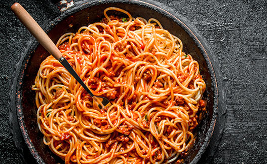
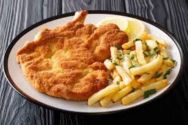

Sabores que alegran el alma y al estomago!!
Alegra a tu estomago
Deja a tu estomago ser feliz y animate a realizar la gran variedad de recetas que ofrecemos, tomate un descanso de la rutina y utiliza tu ingenio elaborando la gran variedad de opciones que tienes por elegir. En esta pagina podras satisfacer tus sue;os de cocinar lo que quieras sin miedo a equivocarte con la receta y elaboracion del mismo.
top recetas de la semana !!
1.

Arroz con pollo
2.

Tacos de birria
3.
